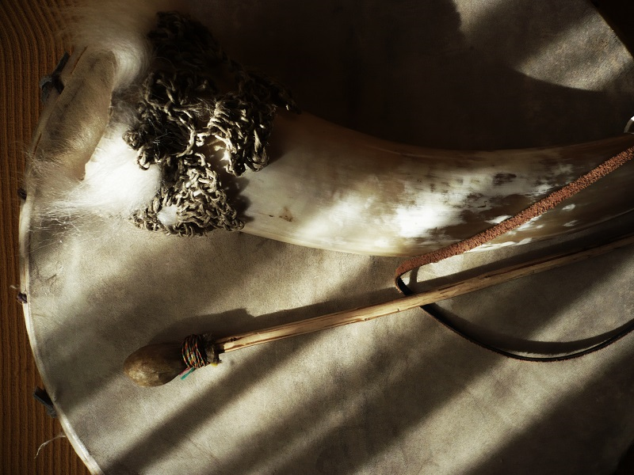

Los muchos erquenchos
Nota 011
Inicio > Blog Bitácora de un músico > Nota 011
El erquencho o erque es un aerófono de construcción y uso tradicional en el noroeste de Argentina y el sur de Bolivia. Se trata de un clarinete idioglótico: el único instrumento de lengüeta simple presente en la organología tradicional andina. Básicamente, se trata de un tubo de caña denominado boquilla o pajuela, de entre 8 y 15 cm de longitud y hasta 1 cm de diámetro, cerrado por un lado y abierto por el otro, y dotado de una lengüeta en el extremo proximal y de un enorme pabellón en el extremo distal.
Existen variantes regionales de erquencho. En Argentina es utilizado en toda la provincia de Jujuy y en el área de pre-puna de la provincia de Salta, al noroeste del país. En el altiplano jujeño se lo suele construir con cuerno de cabra (debido a la escasez de ganado bovino) y en el oriente de la misma provincia, con chapa de cobre o bronce. En Salta se encuentran erquenchos que combinan asta y metal y alcanzan tamaños considerables. En algunas versiones modernas, los constructores argentinos no cortan la lengüeta a partir de la boquilla, sino que realizan un hueco rectangular en ella e insertan allí una lámina de placa radiográfica u otro material similar. Esto, por cierto, convierte al clarinete en heteroglótico.
En Bolivia, en donde el instrumento es llamadoerque (probablemente la designación original) o, según algunos autores, huacachupa (del quechua wakachupa, "cola de vaca"), se lo encuentra sobre todo en el departamento de Tarija, al sur del país. También se ha detectado su presencia en el vecino departamento de Potosí, en regiones como Calcha, y entre los Jalq'a del departamento de Sucre. Allí es muy habitual que la lengüeta se abra directamente partiendo el nudo de la caña en el extremo proximal, y que los pabellones sean grandes cuernos bovinos muy ornamentados.
Debido a la influencias de las sociedades indígenas andinas, este instrumento de las tierras altas aparece en las vecinas tierras bajas: por ejemplo, entre los Mak'á del Chaco central y boreal (Argentina y Paraguay), con el nombre de wakasekech. Izikowitz lo menciona entre los Ashlushlay (Nivaklé o Chulupí) de la misma región; de acuerdo a Pérez Bugallo, ese pueblo lo llamaría taklúk, y sus vecinos Yofwaja o Chorote, waka kiú.
Más información sobre este artefacto sonoro puede encontrarse en el libro digital de acceso libre El erquencho (Wayrachaki Editora, 2014), accesible a través de la sección "Libros digitales sobre música" de Instrumentarium.